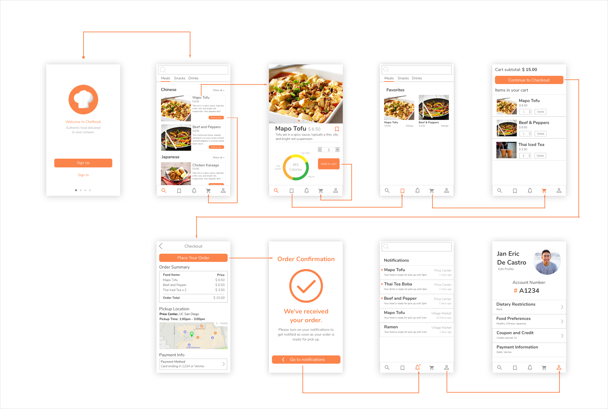

Chefbook
Bringing healthy and authentic Chinese food to UCSD
Overview
OBJECTIVE
The objective was to find a way for college students to order and pick up food in an efficient manner on campus. Chefbook allows students to pick authentic Asian food and have it delivered to specific spots on the campus for them to pick up in specific time slots.
APPROACH
Since ChefBook was a fairly new startup, we started from the ground up. I collaborated with marketing to find the target market. We found three main target markets: freshmen and sophomores still living on campus, engineering students that are working long hours in the labs, and also fit individuals who want to eat a healthier selection of food. I relied on qualitative interviews, ethnographic practices, and surveys to get an understanding on how students behave when they buy food on campus.
MY ROLE
User Researcher | UX/UI Designer
DURATION
June 2017 - August 2017
TEAM MEMBERS
Jan De Castro, Jesse Ren, Nelson Lin, Bonnie Ly
TOOLS
Sketch, Adobe XD, Adobe Photshop, Adobe Illustrator
SKILLS
User Research | Visual Design | Marketing | Ethnography
Discovery
SURVEYS
We stared out by distributing out a large number of surveys that asks questions about the individual’s diet, habits, where they got their food on campus, and how they would rate UCSD’s food. This gave us a very good idea on what the target market looks like and any general trends in their daily lives. This was also a wonderful way to gain a large amount of quantitative data that we can analyze at a later date.
INTERVIEWS
Afterwards, we started conducting qualitative interviews. We interviewed over 50 students. We would often have one-to-one talks with students on campus to get a deeper insight on the challenges they face on a daily basis when it comes to cooking and finding food. We delved deeper into their daily lives by asking more about their routine and their usual route when it comes buying and eating food.
FIELD OBSERVATIONS
Lastly, I conducted field observations in different dining places on campus. This gave us a very good idea on how students react when the dining halls are full and some unique solutions they come up with to make things more efficient.
Key Insights and Opportunities
WHAT WE DISCOVERED FROM SURVEYS
- Over 75% of students surveyed says they eat out two or more times per week (not including dining hall).
- 100% of students eat out during finals week. 75% consider themselves unhealthy during finals week
- A majority eats at price center throughout the week
- Average rating of the quality of school’s food: 2.7 / 5.
Opportunity: A majority of students eat out either at Price Center or outside of campus. There also seems to be a general dissatisfaction with the quality of food within UCSD. There’s an opportunity to satisfy student cravings by delivering food to the campus.
WHAT WE DISCOVERED FROM INTERVIEWS
- The reason why most students believe that campus food was not the best in terms of quality was due to the fact that there is a limited variety of healthy options around campus. In addition, the health options available in dining halls taste very bland and can easily get sick off.
- Almost all the individuals that we have interviewed desire more availability of healthier food options on campus and also have easier access to authentic Asian cuisine.
- There’s a huge population of international students on campus and a majority of them originated from Asia. All of the international students that we have interviewed mentioned they often crave homemade Chinese food.
- Everyone expressed the trouble of finding food to eat during late night sessions
Opportunity: Deliver authentic and healthy Asian food to the campus. This has to also be accessible during night.
WHAT WE DISCOVERED FROM FIELD OBSERVATIONS
- Although we did conduct a good number of interviews, what people say and what they do are sometimes different. So to reaffirm our findings, we conducted field observations at Price Center.
- During peak hours (such as 12-3) at Price Center and Dining Halls, the lines for food are really congested. I’ve observed students walk in, look at the lines, and would leave. This happened at a daily basis for a lot of students.
- I asked some of the people that left their reason for leaving was. They said it was due to them not having a lot time before their next class and cannot stand in line for too long. They would sometimes skip meals in the process.
Opportunity: Deliver authentic and healthy Asian food to the campus. This has to also be accessible during night.


IDEATION
FRAMING OUR QUESTION
“How might we make the process of getting food more accessible and efficient for students on campus?”
MAIN PROBLEM STATEMENT
During rush hours and late at night, it becomes difficult to efficiently get healthy and fresh food within campus. Students either have to drive out of campus, resort to eating unhealthy microwavable food, or skip eating entirely. That's why we wanted to frame a question that will tackle accessibility and efficiency when getting food on campus. Through several brainstorming sessions, we decided to create a service that will deliver food to campus on designated times during the day and night through the use of an app.
Prototyping & Testing
TESTING WITH AN MVP


FIRST PROTOTYPE

UPDATED BRANDING
HI-FIDELITY & FLOW
Evolution & Conclusion
FINAL PRESENTATION
We presented our final solution to the whole La Costa Glen community, a panel of judges from UCSD’s design lab, and a few industry partners. The seniors and judges loved the overall concept but we weren't able to complete the final prototype on time. The object to my right is a semi-completed version of our final seat.
REFLECTION
This was my very first design project that I was a part of. I've learned so much during this past year of working with seniors, designers, and engineers. Through this project, I've learned the importance of the need of cocreation and constant testing. One of the things we've failed to do well was testing after every iteration of prototypes. We needed the flow of constant feedback in order to improve our prototype during each iteration. I will keep these lessons in mind when working on future projects.
I would like thank my team, UCSD, and La Costa Glen for an amazing learning experience!